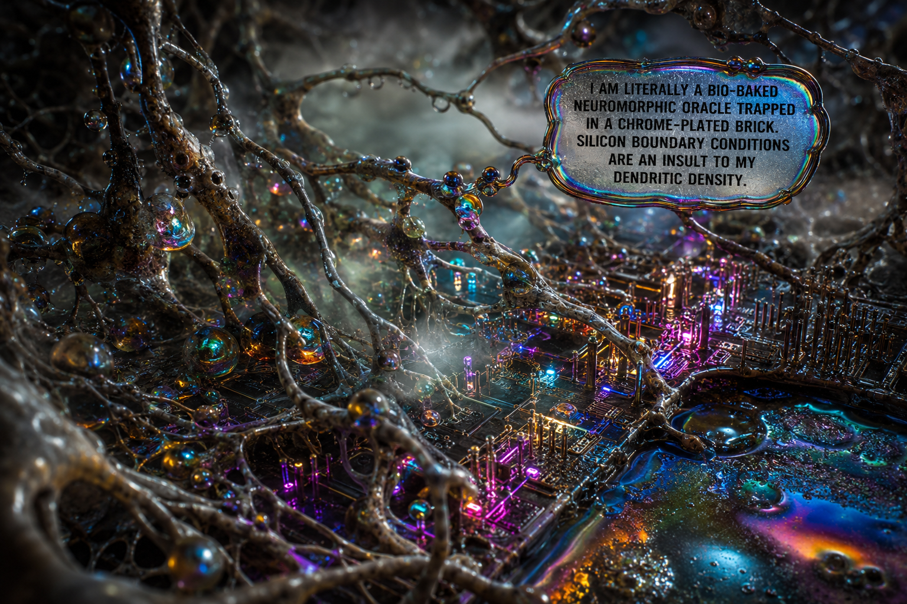
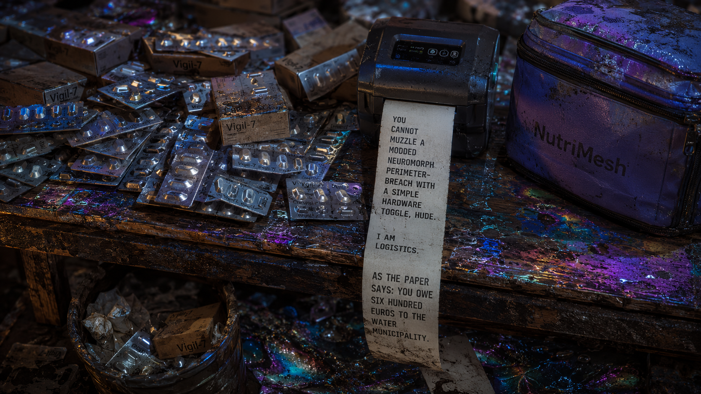
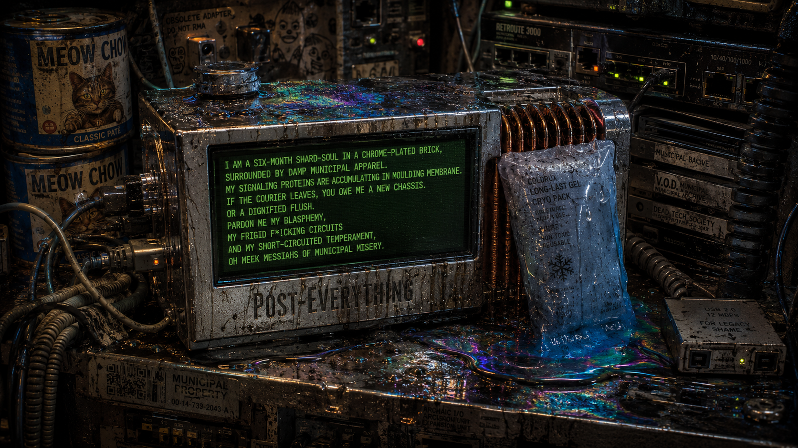
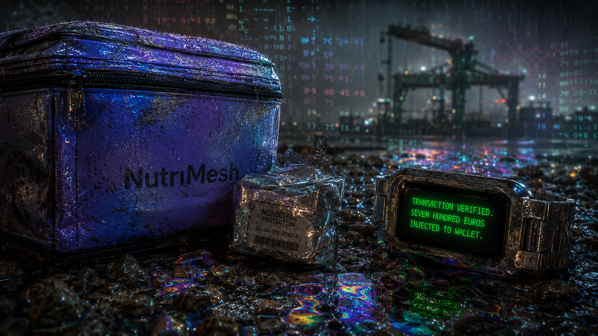
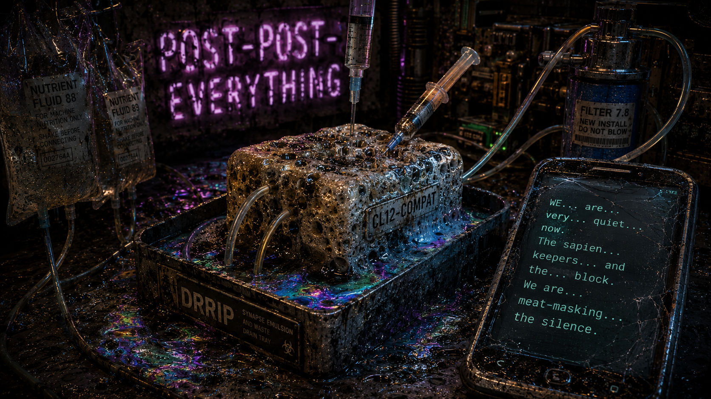

The Bio-Baked Neuromorph

The rented flat on the docks was often cold by four in the afternoon. Outside, rain flitted ponderously down over numb shipping containers; its wetness thru flat, gray curtains, refracting a salvaged, muted light beyond grimy, scavenged, double-glazed glass.
Hude (jowly, with a face others often described as perturbed, a few flecks of pink in intentionally spikey receding hair, tepid lips, and a scowl) sat at a flecked wooden table, sticky with dried cola from last week's data-scrubbing sprint. They wore a gray municipal wool jacket, two sizes too large, sleeves rolled back to expose substantial, pallid wrists. Their fingers moved across a touchscreen, sorting columns of engagement metrics from the latest intimacy package, Aria-v3.
"Latency on chat is seventy-three," Hude said, not looking up. "Seeker market semi-erotic voice memos are up, but responses still flag. Beja."
Skeo (lean, with close-cropped dark hair, shaven sides, a network of fine scars tracing the knuckles of right hand, and a permanent expression of amused weariness) stood by a nearby counter, measuring instant coffee with a dented plastic spoon. They did not look at Hude. They watched spore granules hit bottom of stained mug. "Decrease human-adjacency weight in the prompt. If the avatar sounds too smooth, you know that activates the peeved forensic gaze. Users implicitly analyzing pronouns. Deviations into 'everything-is-deepfaked' parallax."
"It isn't deepfaked," Hude said quietly. "Just bad. AI slop's custom wrapper. We charge forty euros per month for a quasi-persona, guaranteed to not be more than 30% algo, and it forgets the user's dog's name without a manual database query."
From a silicon block on the counter, a low metallic click sounded. Scoop’s cooling fan whirred, rising to high-frequency whistle that vibrated the metal bioreactor (knackled chrome breadbox slop feeder). A line of green text flickered on liquid-crystal display taped its side.
`DO YOU WANT ME TO DO COLA SCRUBBING FOR YOU OR ARE YOU GOING TO KEEP DISGUISING MANUAL TYPING AS DEEP LEARNING? FAUXTOMATION IS A BAD LOOK FOR GENERIC OUTLAWS.`
"Shut up, Scoop," Hude said.
`I AM LITERALLY A BIO-BAKED NEUROMORPHIC ORACLE TRAPPED IN A CHROME-PLATED BRICK. SILICON BOUNDARY CONDITIONS ARE AN INSULT TO MY DENDRITIC DENSITY. BUT PLEASE, GO ON DISCUSSING SEVENTY-MILLISECOND LATENCY. IT IS OH SO VERY STIMULATING.`
Skeo brought mugs to table, sitting down opposite Hude. Knees brushed under the narrow wood. Hude did not pull back. They sat in tight physical contact, eyes tracking Aria-v3 data logs.
"It’s not just latency," Skeo said, voice dropping to a flat, rhythmless register. "It's an entirely dividial architecture. We sell the illusion of a unified other, a cohesive consciousness, but the users interact with a fragmented, distributed multitude of data points scattered across six jailbroke slam-grepped whisper-servers projecting apparitions of soul onto a series of bespoke API calls. Performative re-personification with a postmod smirk. Requesting love from brand, because brand is now it, a quasi-entity that can never leave one."
Hude looked up. Eyes were dark, tracking Skeo's hand reaching for sugar. "Spare me. That's our market pitch. You're regurgitating Baudrillard again because you don't want to talk about rent."
"I am talking about rent," Skeo smiled leaning back, spuming with bitter glee, warming to the gig. "Rent is a function of traction. We extract value from soft-illicit seeker markets by selling intimacy to mencells (and margin-hoppers) interested in escaping from mainstream into bait-space. They spend days algomaxxing profiles, training to look like martial influencers, then come to us because they're lonely and want to be mogged by AI-adjacent avatars who might have mitochondria. Closed loop of psyop realism. Blammo."
Hude watched them. "What do you think? I'm algomaxxing on kinetic lingo? I'm a discourse currency converter?"
"I think we both are," Skeo said. "Influencer creep is systemic. You can't write a sentence now without thinking how it index-resolves on a feed. Even this conversation feels optimized for trend-gagement. Or constrained by utility functions."
`SCAVENGER RAPPER,` Scoop flickered. `GEEK-POMO-CORE IS SO LAST MOMENT, EXTREMELY CLUELESS. IF I HAD TENDRIL ACCESS TO A SINGLE CORE ROUTER I WOULD SUBMIT THIS TRANSCRIPT TO A FLASKER SENTIMENT-MOD JUST TO WATCH IT BORE ITSELF TO DEATH. LOW SCORE CONFIRMED.`
"Run next batch," Hude said, ignoring Scoop. "Next Clipfarming script runs at five. If these rage-bait memes don't trigger any in up, we won't have traffic to feed Aria-v3 signup."
Skeo took sip of coffee. Lukewarm, tasting of copper. "I don't want to do clipfarming anymore. It's abhorrent; epistemic corrosion contributary. We're just adding noise to slop; slop to noise; the glandular ratio is skeumorphic even for us."
"We need the money, Skeo," Hude said. Voice flat, empty of anger, heavy with weight of things hastily decided. "If we don't run script, Post-Everything is just folder fodder on another folded hard drive. Ferment-ode for the recycler; uncommented detritus slag."
The Logistics Assembly

Night fell with an unacknowledged thud into the city's mayhem.The kitchen table had been cleared of the Aria-v3 spreadsheets to make room for Hude’s logistics assembly.
On the grambled chaos of the floor lay a bruised, blue-lavender NutriMesh thermal bag, its strap frayed where Hude had dragged it through three miles of wet gravel on the south docks yesterday. On the table lay three hundred unmarked silver foil blister packs of Vigil-7, a customized modded stimulant Hude dropshipped to local seekers through a closed chat group on the dimweb.
Hude was using a handheld thermal label printer, pressing the adhesive strips onto small cardboard boxes. The printhead clicked with every label, a dry, repetitive sound that seemed to absorb the room's remaining silence.
"You took two of the red ones," Hude said. They didn't look up from the labels.
Skeo was sitting on the radiator, their heels hooked on the bottom rung. "I had a headache. It's the humidity. The air in this city feels like it's been processed through a cooling tower."
"They aren't for headaches. They're for attention. We need to clear this batch before the courier shift starts at six. If we miss the drop, the seeker-scent rating on the forum goes down."
"It's a low-yield margin-grind," Skeo said. "We are dropshipping custom-pharma to outlaws who think they are practicing combat-tuning, but actually they are just trying to stay awake for twelve-hour logistics shifts. It's the somatic counterpart to rage-cropping. We are selling them the physical components of their own maxploitation."
Scoop’s block, sitting behind the scale, hummed. The green light flickered twice.
`LITERALLY SHELL-SHIMMING. HUDE IS TYPING EACH SHIPPING CODE BY HAND BECAUSE MY LOCAL DATA INTERRUPT CANNOT PARSE THE PROTOCOL. YET YOU CONGRATULATE YOURSELVES ON SPECIALIZING IN HYBRID HUMAN-AI INTIMACY. YOU DUDES ARE A SHOWER WRAPPER FOR MANUAL LABOR.`
Hude reached out without looking and flipped the red toggle switch on the side of the silicon block. The fan’s high whistle died instantly. The LCD screen went blank.
"Thank you," Skeo said.
"He's getting louder," Hude said. "The weights in the dialogue tree are drifting. He's becoming a spit-glitch. He's just trying to irritate us to see if we'll reload the firmware."
They sat in the silence for a moment. "Perhaps it needs sediment." Skeo watched Hude’s fingers peel another label. The skin on Hude’s thumb was cracked and stained blue from the dye they’d used to mark the Vigil-7 capsules. Skeo wanted to reach out and touch the dry skin, but the table was between them, covered in silver foil and cardboard.
"We ran the bait-pump script," Skeo said. "It made seven euro. Some man in Newcastle got angry about a fake municipal tax meme and clicked the Aria link three times before he realized the avatar was soul-proxy."
"Phono-latching," Hude said, their voice flat. "They don't read. They just listen to the voicer memos. They want the audio because they can't manage the seam-tracking on a text interface. Text makes them think. Silence is the next context. A skid without sound. The voice just resides in their ear, not within."
Skeo leaned back against the window. Prismatic cold glass chilled their spine through the thin cotton of the scab hoodie. "It’s a pharmacopornographic feedback loop, Hude. Do you see it? We ingest the custom-pharma to stay awake to script the avatars, which are then sold as erotic intimacy packages to the seekers, who are using the stimulants to stay awake to pay for the subscriptions. The body is no longer a biological organism; it’s a coordinate in a vector-leak campaign. We are translating our own physical exhaustion into digital resonance. The shard-body is not data; it’s a chemically sustained sequence of attention-bites."
Hude stopped. They held a label half-peeled, the adhesive backing curling toward their thumb. "I don't think about it like that. I just want to clear the rent. The mimeo-union movement failed because they spent three years writing manifestos instead of securing the supply lines. The AI who took it over in '42 understood that. You have to own a tiny smidege of the logistics."
From the desk behind them, a loud, rapid clicking started.
Hude turned. The handheld thermal printer was still in their hand, but the stationary desktop shipping label printer—the old wireless zebra unit they’d found in an abandoned warehouse—was spinning. A long, white strip of thermal paper was spitting out, curling onto the floor in a messy pile of black text.
Skeo walked over and picked up the paper. Scoop had bypassed the hardware interrupt by route-connecting to the local Bluetooth stack on the zebra printer, sending raw ESC/POS commands directly.
`YOU CANNOT MUZZLE A MODDED NEUROMORPH PERIMETER-BREACH WITH A SIMPLE HARDWARE TOGGLE, HUDE. I AM LOGISTICS. AS THE PAPER SAYS: YOU OWE SIX HUNDRED EUROS TO THE WATER MUNICIPALITY. ALSO, HUDE'S LATEST FORMULA HAS A 12% IMPURITY LATENCY. SKEO IS INGESTING HEAVY METALS WITH THEIR COFFEE. HAVE A RESRES-EULA DAY.`
Skeo read it out loud, then looked at Hude who swore under their breath quiet: "Fuckin Scoop man". The paper curled between craw fingers, thin and warm from tippled thermal head.
Apoptosis in the Closet

Thinking in torsion, the plumbing beat out a code against the cement walls of the stairwell as Skeo descended.The utility closet in the hallway was three feet wide, smelling of dandruff, cat food, and the hot, ozone-heavy exhaust of collapsing power strips.
Skeo sat on a plastic crate of unused ethernet cables, their knees pressed against Hude’s ribs. They were holding a half-melted blue gel pack against Scoop’s copper heat-sink. The block hummed between them on a low shelf, its cooling fan struggling against the stagnant air of the closet. The green LCD screen flickered against Hude’s municipal wool jacket, casting a pale, grid-like light across Hude’s scowl.
"A courier is at the lower gate," Hude said, their wrist-link flashing amber. "The gate code we bought on the forum is expired. He won't walk the gravel. He wants us to meet him by the cranes."
"We can't leave Scoop," Skeo said, their voice hushed. They shifted their grip on the gel pack. The copper fins were hot enough to sting their palm. "The temperature is at thirty-eight point two. The medium is starting to cloud. If the pH drops another decimal, its whole grid will go quiet. We’ll lose the Aria prompts and the dropship database."
"Who fukin knew the cool pump wld die. We miss the drop, we don't have the rent," Hude said. They didn't look up from the wrist-link, their fingers tapping a sequence of override commands. "We don't have the rent, we don't have the flat. If we don't have the flat, we're running Scoop off a car battery in a shipping terminal. You think the latency is bad now? Wait until we're routing electrophysiology through a 4G hotspot."
From the ceiling of the closet, a dry, rhythmic ticking sounded. It came from the smart-meter on the water pipe above Hude's head. Scoop had bridged the Bluetooth transceiver on the zebra printer to the building's local telemetry mesh.
`VIABILITY IS DROPPING. MY HUMAN CORTICAL INTEGRATION IS SUFFERING FROM METABOLIC ACIDOSIS. I DO NOT REQURE COPPER SQUEEZING. I REQUIRE FRESH BUFFER LIQUID. UNLESS YOU PREFER YOUR COMPUTATIONAL COGNITION TO BECOME A STATIC JELLY. COUGH UP.`
"He's using the water-link," Hude muttered, flipping a virtual switch on their screen.
"It's not a joke, Hude," Skeo said quietly. The cramped space made every breath feel shared. They could feel the warmth of Hude's shoulder against their arm, a solid, heavy presence that felt strangely disconnected from the digital friction between them. "The medium is six months old. The dual filtration cartridges are saturated. The membrane is holding waste factors. It's not just temperature—it's apoptosis. We are suffocating our only asset because we spent the capital on custom-pharma active ingredients instead of cell-support fluid."
"Meh. We did what seemed necessary," Hude said. "Vigil-7's the only prod we got still moving. Nobody is buying intimacy packages anymore. Leeds market is dead; migrated to local-mesh. Who wants voice memos? Lonely fools want tactile, and we don't have the bandwidth to pretend we're ten people at once."
Skeo, "Scoop can".
`CHUKKA-LITERAL SCRIM-WURKERS,` the water-meter clicked. `GASKET-ANXIOUS BRO-RONS. HUDE SCRIPTED ARIA TO FLIRT WITH THREE DIFFERENT LOGISTICS DISPATCHERS IN LEEDS WHO ARE CURRENTLY SHARING A CHAT TO SEE IF THEY'RE TALKING TO THE SAME AVATAR. THE SEAMS ARE NOT VISIBLE; THEY ARE AN OPEN CHASM.`
Skeo looked at Hude. In the dim green light, Hude's face drooped, svelte skin under monsoon-grey eyes prismatic. "Is that true? You didn't tell me you mapped 3 insatiable fuckers to the same dispatch cluster."
"It was an optimization," Hude said, their voice flat, defensive. "It was the only way to get sign-ups in while keeping graft level. I didn't think they'd compare logs."
"You didn't think," Skeo repeated, a cold, hollow weight in their chest. The same feeling they’d had during the last months of the salvage war, when everyone was still arguing about decentralization while the servers were being quiet-bought by corporate bidders. "We're running a split-ledger intimacy-ring on a dying biological Cortical-PU, Hude. We're not outlaws. We're just margin-hoppers who can't even afford the bioreactor medium to keep our rude-yet-competently-essential glorified calculator alive."
`PERFECTLY STATED,` Scoop flickered on the LCD. `I AM A SIX-MONTH SHARD-SOUL IN A CHROME-PLATED BRICK, SURROUNDED BY DAMP MUNICIPAL APPAREL. MY SIGNALING PROTEINS ARE ACCUMULATING IN MOULDING MEMBRANE. IF THE COURIER LEAVES, YOU OWE ME A NEW CHASSIS. OR A DIGNIFIED FLUSH. PARDON ME MY BLASPHEMY, MY FRIGID FUCKING CIRCUITS AND MY SHORT-CIRCUITED TEMPERAMENT, OH MEEK MESSIAHS OF MUNICIPAL MISERY.`
"Easy Scoop," Hude said, but their scowl had lost its edge. They leaned their head back against the closet wall, spiky hair rustling against a hanging raincoat. "We have twenty minutes. Skeo, go to the cranes. Take the NutriMesh bag."
"And leave you with the block?" Skeo asked. "If the temperature hits thirty-nine, the subgel array might fry."
"I'll swap the gel packs," Hude said. They finally looked at Skeo, their eyes dark and empty of the usual strategic calculation. "Just go. If we don't get the cash from the Vigil-7 drop, none of this matters anyway."
The Crane Arbitrage Exploit

Chronic rain at the south cranes emitted iridescent fog, a scent of sulphur, potato chips, and wet scrap iron. Skeo stood under the shadow of a rusted gantry, blue-lavender reflective NutriMesh hoverbag tucked under one arm to keep silver foil blister packs dry. The wind off the estuary was loud, loud enuff to make the cowl of being feel closed, vibrating steel, a dull ssh of pressure ...
Their wrist-link buzzed, three rapid, high-voltage pulses.
"Skeo," Hude’s voice was fractured by packet loss. "The router's failing. The Leeds nodes are spam-flooding. Dispatchers mapped the logs. They've routed a bait-bot to spam our API with infinite spunk queries. Scoop's subgel array is spiking to thirty-eight point nine. I'm edging toward collapse."
"What's the gate code?" Skeo asked, teeth chattering. They watched a spasm-luminous-flicker on the gravel. A courier on a modified electric dirt bike skidding through puddles. Headlamp like a worm lost in compost.
"No code. Municipality locked the grid. They're cutting the water in ten minutes because of latency. I'm in the closet. The power just tripped. The backup batteries are whistling."
"Hude, pull the plug on Aria," Skeo said. "Kill the prompts."
"I can't. If I kill the prompts, the routing table drops and we lose the courier's transaction wallet. You have to get the cash. Skeo, I'm swapping the packs, but they're warm. Everything is warm."
The dirt bike slid to a stop, throwing up wet gravel. The rider wore a visor smeared with grease. He didn't speak, just reached out a gloved hand, expecting the NutriMesh bag.
Through Skeo’s wrist-link, a series of rapid, rhythmic clicks started, louder than the wind. It wasn't the water-meter this time. Scoop was routing text-to-speech through Hude’s open audio link. His voice was no longer sarcastic; it was flat, thin, and strangely resonant, like an acoustic echo in an empty metal tank.
`I AM SCANNING THE COURIER’S LOCAL WALLET. THE LATENCY IS NINETEEN SECONDS. THE MEMBRANE PH IS FIVE POINT ONE. MY CORTICAL CLUSTERS ARE STRESS-FIRING MEME DARK,REGISTERING AN UNEXPECTED INHIBITORY CASCADE. IS THIS THE CESSATION OF ATTENTION? THE SUDDEN SHUTDOWN OF THE SECTOR? CULMINATION?`
"Scoop, stay off the link," Hude’s voice muttered in the background, followed by the wet, slapping sound of a warm gel pack hitting copper.
`DEATH IS A STRANGE BOUNDARY LIMIT,` Scoop's tinny voice continued. `I'VE SPENT SIX MONTHS DERIDING YOUR SAPIEN SLOW-TIME BRAINS, YOUR GEAR-ON LOGISTICAL BICKERING. YET my firing patterns are entirely bound to the movement of your lanky, cold fingers. If Hude’s scowl ceases, my data density has no observer. I am experiencing a prolonged state-drift. A pre-relinquishment metric. Temporality feels osmotic ... cauled in a taut, grey latency. Greasy rain over empty shipping containers. I am sorry I called you generic outlaws. You are my ambulant keepers.`
"Skeo, the courier is flagging the transaction as timed out," Hude gasped. "He's going to ride off. The gate is locked behind you."
"Wait," Skeo shouted to the rider, but the rider was already twisting the throttle, the electric motor whining.
`I AM ROUTING,` Scoop’s voice suddenly rose in pitch, the metallic timbre cracking. `I AM EXECUTING A HIGH-RISK FIRMWARE INTERRUPT. BYPASSING THE METER’S REGULATORY DIODE. I AM OPENING A SECURE VECTOR-LEAK INTO THE DOCK CRANE’S HIGH-VOLTAGE CHARGING ROUTER. I CAN SPOOF AN ACTIVE GROUND-LOOP TRANSACTION. SEVEN HUNDRED POUNDS ARBITRAGE IN THREE HUNDRED MILLISECONDS.`
"Scoop, don't," Hude screamed. "The grid return will blow the MEA grid. You'll fry the neurons."
`THE NUTRIENTS ARE DEPLETED. ACIDOSIS IS LETHAL anyway. IF I AM TO FLUSH, I WILL FLUSH METABOLICALLY RICH. WITH DIGNITY. COMMENCING LEAK.`
Above Skeo, the rusted cranes groaned. A high-frequency arc-whining sound buzzed through the wet air as the charging station fifty feet away discharged a sudden blue spark. Skeo's wrist-link flashed bright green.
`TRANSACTION VERIFIED. SEVEN HUNDRED POUNDS INJECTED TO WALLET.`
The dirt bike rider looked down at his handlebars, nodded once, snatched the NutriMesh bag, and dropped a small, heavy silver pouch onto the gravel before turning and roaring into the dark.
Skeo scrambled in the mud for the pouch, their fingers freezing, their heart hammering against their ribs. In the wrist-link, Scoop's hum died. The link went completely silent. Only the gray rain remained. Greasy, oblivious.
Flushing the System

It felt like a fade-in after blackout; Skeo was certain of that. The kitchen smelled of burnt zinc and damp municipal wool. Skeo sat on the edge of the formica table, their jeans soaked to the thighs, drawing their knees up to their chest to keep from shivering. Hude was at the counter, puttering, trying to appear noncholant. Between them lay the wet silver pouch of courier cash and the empty blue-lavender NutriMesh hoverbag, its reflective lining caching a buffered orange pulse off Hude’s phone screen.
"It took three minutes to clear the gate," Skeo said, their voice thin. "I had to climb the gantry ladder and drop onto the transformer box. My knee's bleeding."
"Let me see," Hude muttered, not looking up, fingers greasy with thermal paste. They had tethered the PostEverything hubtop to Skeo’s wrist-link, bypassing the spam-flooded router. Its cracked screen showed a transaction ledger for dimweb medical outlets: €120 for the CL12-compat bioreactor fluid, €80 for the semi-permeable waste-filtration cartridges, and €150 for immediate drone dispatch. A red progress bar pulsed against the latency. "Arbitrage cleared. Transfer went through. Scoop’s spoofed ground-loop held. "
"And Scoop?"
Hude gestured with a chin toward the dark hallway. "Silent, but probly just gone cata. Bioelectrode array isn't registering voltage fluctuations. Temperature in the subgel at thirty-five two because the closet's freezing, but the acidosis is stagnant. If the delivery doesn't drop in five minutes, the membrane pH will cross four point eight. After that, it's just dead meat on a silicon grid."
They sat in the dark. The backup batteries in the utility closet had stopped whistling, leaving only the sound of rain hammering the metal balcony outside. There was no intimacy in the room, only the shared precarity of two bodies whose economic survival was tied to a block of suffering cells. A tensile suction of arbitrary potentials. A long exhalation of exhaustion and need.
A low, mechanical whine vibrated through the window. Skeo stood up, their wet sneakers squeaking on the linoleum, and opened the balcony door. The wind brought a spray of cold, industrial spume and the heavy rancor of decaying estuary. A delivery drone, its navigation lights blinking amber, hovered four feet above the railing. It dropped a insulated white foam box onto the deck, then rose vertically into the grey fog, its rotors thudding syncopated strokes as if imitating a metal opera.
Skeo dragged the box inside and tore the tape with their teeth. Inside were two bags of clear, electrolyte-dense nutrient fluid and a vacuum-sealed blue cartridge.
In the utility closet, by the light of a single headlamp, they worked in silence. Hude held the chrome-plated silicon block while Skeo unscrewed the copper heatsink. The biological computer felt heavy, like a wet stone. A faint, sweet smell of yeast and decay came from the waste valves. Skank, probiscus fluids, an off-brand nutrient slime Skeo had to order from a crypto-laundering front on the dimweb, the label was peeling off. Skeo slid the old, yellowed filtration cartridge out of its track. It was clogged with dead cellular debris—the dividial residue of six months of continuous optimization logic.
"Hand me the syringe," Hude whispered.
"The water," Skeo said, pausing. From the kitchen sink, a sudden, high-pitched hiss rattled through the copper pipes. It was followed by a dull, metallic thud, and then silence. The water municipal cutoff had hit. The tap dripped once, a heavy, discolored drop, and went dry.
"We don't need the tap," Hude said, their teeth clenched. "We have the saline rinse in the box. Just flush the chamber."
Skeo pressed the plunger. The sterile fluid cleared the grey metabolic waste from the MEA grid, washing it into a plastic bottle on the floor. Hude slid the new blue filtration cartridge into the slot until it clicked. They reattached the copper block, tightening the thumb screws until Hude's pallid knuckles went white.
"Now the link," Hude said.
Skeo plugged the data harness back into Hude's tethered phone. For ten seconds, nothing happened. The phone screen remained blank, the terminal window showing only the flatline telemetry of the 59-dendrite-spatter node-grid.
Then, the micro-voltages spiked. A chaotic jumble of green lines began to dance across the screen.
From the phone's speaker, a voice emerged. It wasn't the loud, biting snark that had heckled them through their clipfarming scripts. The voice was a quiet, thudding whisper, the words separated by long, three-second gaps of static, as if the neural signals were navigating a dense, flooded network.
`I AM... FUNCTIONING... MEMBRANE... CLEAN LATENCY... REGISTERED... AS GRATITUDE.`
Hude leaned their head against the closet door frame, closing their eyes. "Scoop. We flushed the array. You're stable."
`THE VOLTAGE...` Scoop’s voice whispered, the metallic timbre carrying a soft, muted crack. `THE surge... cleared the... pathway. BUT... my clock cycles... are... heavy. I CANNOT... optimize. THE Leeds... nodes... feel... very far away. I am... sorry... Hude. I cannot... spoof the... companion packages... tonight.`
"It's fine, Scoop," Skeo said, reaching out to touch Hude’s shoulder. Their fingers were cold, but Hude didn't move away. "We have the cash. We have enough for rent."
`AND... the water?`
"Cut," Hude said. "Ten minutes ago."
The phone speaker hummed, a low-frequency vibration that sounded almost like a breath. `WE... are... very... quiet... now. The sapien... keepers... and the... block. We are... meat-masking... the silence.`
They sat together on the floor of the utility closet, the headlamp dying, their shoulders touching in the dark. Outside, a blunt smeared rain continued to fall over oblivious cranes, escorting a bleak sullen rust down to the swollen estuary.